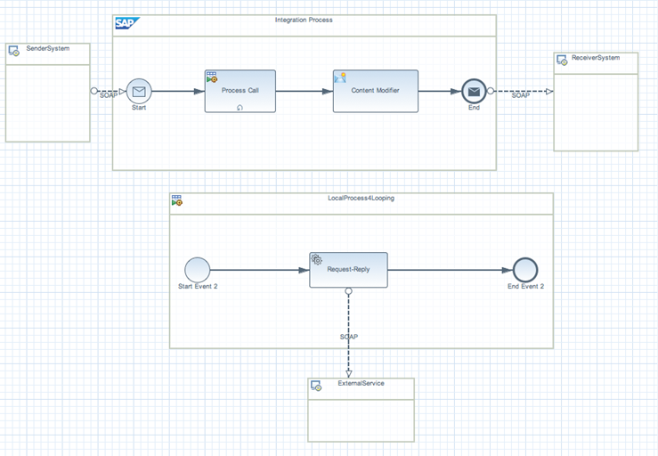

Defining a Looping Process Call
You can execute a local integration process in a loop.
Context
Procedure
-
In the palette, choose
 Tasks
Tasks  Process Call
Process Call  and drop the shape into the modelling area.
and drop the shape into the modelling area.
-
Specify the following attributes.
Table 1: Field
Description
Expression Type
Specify the kind of expression you want to enter in the Condition Expression field.
You have the following options:
-
XML
For XPath expressions, for example: //customerName = ‘Smith’
-
Non-XML
For Camel Simple Expression Language
NoteExamples:
${header.SenderId}, which indicates the SenderId header field.
${in.body}, which indicates the body of the incoming message.
For more information about Camel Simple Expression Language, see: http://camel.apache.org/simple.html
 .
.
Condition
Enter the condition (XML or Non-XML, as specified by the property Expression Type).
Do not use a mixed expression (containing both XML and Non-XML expressions).
For more information about the usage of operators, see Defining Router
Max. Number of Iterations
Maximum number of iterations that the loop can perform before it stops (99999 iterations maximum).
You can use this setting to prevent a never-ending loop.
Example Scenario for the Local Loop Process.
NoteThe local loop process refers to a while loop. The sub process will run as long as the loop condition is fulfilled.
To explain how a local loop process works, we provide a simple example.
Every morning, an account owner wants to check all transactions performed on his account. He calls a specific web service and has defined this request:<accountID>12345<accountID> <action>Transaction_of_last_Day</action> </accountinfo>
The appropriate response for this request is:The account owner has to call the web service again and again until there are no more transactions available and he gets the response:<accountinforesponse> <transaction> <id>1</id> ... </transaction> ... <transaction> <id>55</id> ... </transaction> <hasMore>true</hasMore> </accountinforesponse>To simplify the call, he can use the loop embedded in the HCP Integration Service. He needs to define a while condition in the Xpath such as /accountinforesponse[hasMore=true].<hasMore>false</hasMore>
As long as data are available, the call will continue. The sub-process inducing the loop uses the ServiceCall step in the Request-Reply mode to call the web service. As soon as the web service gets the response <hasMore>false</hasMore>, the processing exits the loop and continues with the next step. The last response of the web service is the new payload, that will be taken as message body into the next step.
 -